← G1 research slide · Results and parameters (JSON) · Validation checks
Force errors · Robot driven by estimates · Equations · Parameters
9 of 9 material/command reference conditions have results. The force-vector RMSE, averaged over feet and time, across these conditions ranges from 70.5 to 115.5 N. 5 completed their requested duration. Among 4 tests using estimated forces to drive the robot: 1 reached the requested duration, 2 stopped at the bed boundary, and 1 triggered a termination condition.
Experiment queue: complete; 13 of 13 runs complete.
Additional comparisons: complete; 5 of 5 runs complete.
The existing G1 walking policy controls 29 joints. Newton’s MJWarp solver computes the robot motion and implicit MPM computes the material motion. A separate iterative contact solver estimates the force and torque on each foot from the known particle motion.
This evaluates force reconstruction with reference particle velocities. It does not test a learned particle model. The estimator treats the two feet as separate virtual rigid bodies, matching the current MPM coupling approximation. It does not yet use the full robot mass matrix to couple the contact response of both feet.
The robot’s unconstrained velocity depends on actuator forces, passive forces, gravity, and velocity-dependent inertial forces. In generalized coordinates, a first-order description is:
v_free = v_current + dt × inverse(M(q)) × (tau_actuator + tau_passive − b(q, v)) v_next = v_free + inverse(M(q)) × J_contactᵀ × p contact_velocity = J_contact × v_next
v contains floating-base and joint velocities. M is the whole-robot mass matrix, b includes gravity and velocity-dependent forces, and p is the contact impulse. The full robot contact response is J_contact × inverse(M) × J_contactᵀ. Body velocities are used to evaluate motion at the contact points; they do not remove the articulation constraints.
The current implementation uses Newton’s actual MJWarp integration with native joint actuation. Before the MPM solve, the coupler forms each foot’s virtual-body starting motion by rewinding its previous feedback using that proxy’s mass and inertia. The estimator reads this motion directly. This proxy rewind is an approximation to removing the contact contribution from the whole articulated robot.
proxy_velocity = proxy_free_velocity + inverse(M_proxy) × sum(Jᵀ × p)
relative_contact_velocity = J × proxy_velocity − particle_surface_velocity
+ p / effective_particle_mass
force_on_foot = sum(world_contact_impulse) / dt
torque_on_foot = sum((contact_point − foot_COM) × world_contact_impulse) / dt
Here J maps the proxy’s COM motion into each contact’s local normal/tangent axes. The local velocity fit evaluates particle motion at the foot surface. The baseline approximation uses effective_particle_mass = 10 × particle_mass; the mass tests also evaluate a multiplier of 100. Both use a 0.065 m gradient-fit radius, and a 0.08 m band around the foot where velocity gradients are evaluated. The friction coefficient comes from the foot collision shape, separately from the material’s internal friction. MPM stresses and reference contact forces are not estimator inputs.
In the reference tests, MPM feedback drives the robot and the estimate is only measured. In the estimated-feedback tests, the estimate replaces the feedback used by the next rigid step. MPM still generates the particle motion in those tests.
The nine baseline conditions request 6 s of motion: stand for 1 s, then walk forward at 0.3 m/s, backward at −0.3 m/s, or turn at 0.5 rad/s. Command values are requests to the policy; measured trajectories show whether the robot follows them. Force errors are evaluated after the first second when that interval exists. Runs that end earlier report startup-only errors and do not test the requested motion command. A terminated or boundary-limited run covers a shorter interval.
| Material / command | Duration [s] | Outcome | Foot force error, L / R [N] | Foot torque error, L / R [N m] |
|---|---|---|---|---|
| Sand / forward | 3.64 | Reached material-bed boundary | 74.8 / 73.5 | 4.74 / 4.95 |
| Sand / backward | 5.64 | Reached material-bed boundary | 72.6 / 68.3 | 3.68 / 3.59 |
| Sand / turn | 6.00 | Requested duration completed | 84.4 / 66.9 | 5.56 / 4.79 |
| Snow / forward | 4.48 | Reached material-bed boundary | 109.0 / 101.2 | 3.39 / 3.22 |
| Snow / backward | 6.00 | Requested duration completed | 113.4 / 117.5 | 3.55 / 3.34 |
| Snow / turn | 6.00 | Requested duration completed | 115.2 / 92.7 | 3.20 / 3.33 |
| Clay / forward | 3.92 | Reached material-bed boundary | 96.6 / 87.7 | 6.74 / 6.70 |
| Clay / backward | 6.00 | Requested duration completed | 88.5 / 94.1 | 4.94 / 5.97 |
| Clay / turn | 6.00 | Requested duration completed | 87.8 / 82.1 | 5.87 / 5.64 |
Force error is the square root of the mean squared 3D force-vector error, reported separately for left and right feet. Torque error uses the same definition for torque vectors about the foot centers of mass. These are errors against the configured 25-iteration MPM reference, not against measured physical ground truth.
| Material / command | Duration [s] | Outcome | Foot force error, L / R [N] | Foot torque error, L / R [N m] |
|---|---|---|---|---|
| Sand / backward | 5.54 | Reached material-bed boundary | 83.0 / 90.1 | 6.48 / 6.95 |
| Sand / forward | 3.80 | Reached material-bed boundary | 93.6 / 104.8 | 6.69 / 7.18 |
| Sand / turn | 4.50 | Terminated: bad orientation | 96.5 / 74.0 | 7.30 / 7.85 |
| Sand / turn 200 solver iterations; effective particle mass 100× |
6.00 | Requested duration completed | 29.5 / 28.5 | 3.96 / 3.49 |
Some original estimated-feedback runs also receive direct rigid-ground support. The backward run has 76.0 N mean vertical ground-plane force on the feet; the original turning run has 115.6 N. These forces are additional to the estimated material forces, so remaining upright does not by itself validate the estimated support force. The revised 100× turning run has zero direct foot-to-ground force in the recorded samples. Ground-force diagnostics sample the final rigid substep of each coupling interval and are unavailable for some earlier cases.
The table retains the original three 50-iteration, 10× mass conditions and adds the 200-iteration, 100× mass turning follow-up. Completing a rollout alone does not establish accurate force prediction or long-term stability. Both the force profiles and robot motion must be considered. If the robot falls, the termination reason is retained in the table.
| Material / command | Duration [s] | Outcome | Foot force error, L / R [N] | Foot torque error, L / R [N m] |
|---|---|---|---|---|
| Clay / forward 200 vs 200 solver iterations; effective particle mass 10× vs 100× |
3.00 | Requested duration completed | 97.0 / 92.8 | 7.21 / 6.83 |
| Sand / forward 200 vs 50 solver iterations; effective particle mass 10× vs 10×; grid spacing 0.02 m |
3.00 | Requested duration completed | 80.5 / 75.7 | 3.42 / 3.87 |
| Sand / forward 200 vs 50 solver iterations; effective particle mass 10× vs 10× |
3.00 | Requested duration completed | 77.2 / 81.4 | 5.05 / 5.34 |
| Sand / forward 200 vs 200 solver iterations; effective particle mass 10× vs 100× |
3.00 | Requested duration completed | 76.1 / 76.4 | 4.64 / 5.09 |
| Sand / forward 200 solver iterations; effective particle mass 10× |
3.54 | Reached material-bed boundary | 78.7 / 76.3 | 5.16 / 5.16 |
| Snow / forward 200 vs 200 solver iterations; effective particle mass 10× vs 100× |
3.00 | Requested duration completed | 114.6 / 106.6 | 5.49 / 4.10 |
Increasing the iteration count tests numerical convergence for the chosen contact model. Changing the effective particle mass changes that model. These are different experiments.
Consider only vertical translation, with a stationary target particle velocity, fixed active contacts, and no stabilization or rotation. Let M_proxy be the foot proxy mass and M_eff the sum of the active particles’ effective masses. The contact equations reduce to:
M_eff = mass_scale × sum(active particle masses) 0 = v_free + P / M_proxy + P / M_eff P_estimated / P_required_to_stop_proxy = M_eff / (M_proxy + M_eff)
For finite M_eff, this ratio is below one. The added particle response allows a smaller impulse than would be required against a stationary rigid support. At the same active contact count and particle volume, a lower material density reduces M_eff and can increase this effect.
This one-dimensional calculation identifies a possible source of bias in the approximation. It does not establish the cause or magnitude of the measured G1 errors: contact count, material motion, rotation, and the local velocity fit also change. The paired mass experiments above test this hypothesis using identical recorded inputs.
The initial material bed is 2.0 × 2.0 × 0.5 m to give G1 room to move. Its initial surface is at world z = 0; the ground plane is at z = −0.5 m. There are no retaining walls or approach platform. Grid spacing is 0.04 m with 1.25 particles per cell along each axis: 63 × 63 × 16 = 63,504 particles. Initial particle jitter and reset randomization are disabled. Seed: 42.
The policy is cached WandB run 5f1xyc21, checkpoint model_39998.pt. It receives 937 observations and outputs 29 joint commands at 50 Hz. MPM runs at 200 Hz with up to 25 solver iterations and tolerance 0.0001. Both feet use 0.17 × 0.06 × 0.01 m collision boxes. Exact proxy masses, inertias, offsets, and friction coefficients are recorded in the JSON.
| Parameter | Sand | Snow | Clay |
|---|---|---|---|
| Density [kg/m³] | 1600 | 250 | 1500 |
| Young’s modulus [Pa] | 1e15 | 1e15 | 1e15 |
| Internal friction | 0.48 | 0.30 | 0 |
| Yield pressure [Pa] | 1e15 | 2e6 | 1e15 |
| Tensile yield ratio | 0 | 0.05 | 1 |
| Yield stress [Pa] | 0 | 0 | 200 |
| Hardening | 0 | 1 | 0 |
| Dilatancy | 0 | 1 | 0.1 |
| Viscosity | 0 | 0 | 100 |
Poisson ratio is 0.3 for all presets. The finite 1e15 Pa value approximates the rigid elastic limit. These supplied presets are not calibrated from measurements of this terrain.
MPM foot forces drive the robot. 6.00 s recorded. Requested duration completed.
Base displacement in world coordinates: (-0.496, -0.016, -0.499) m. Last recorded base height: 0.261 m above the initial material surface.
| Foot | Relative force error | Vertical bias [N] | Vertical peak: reference / estimate [N] | Force error while loaded [N] | Estimated force while unloaded [N] |
|---|---|---|---|---|---|
| Left | 29.5% | -39.5 | 661.4 / 508.3 | 103.7 | — |
| Right | 29.1% | -45.9 | 656.3 / 558.0 | 105.9 | — |
Relative error = norm of force error divided by norm of reference force over all evaluated samples. Loaded: reference vertical force > 20 N. Unloaded: reference force magnitude < 5 N. A dash means no samples met that condition. Peaks may occur at different times.
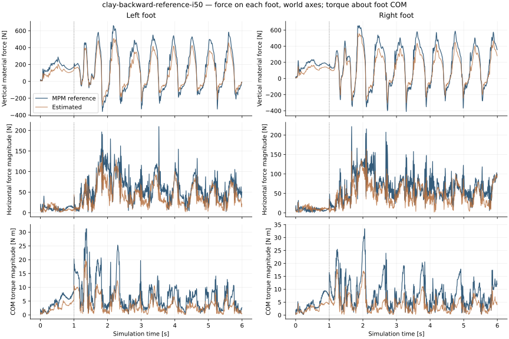
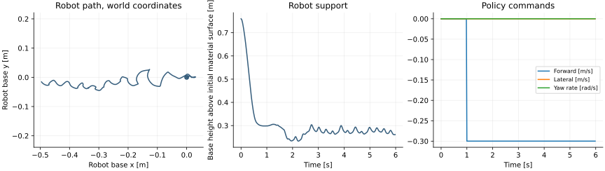
Mean vertical material force summed over both feet: 326.7 N reference; 241.3 N estimated.
Mean actual base-frame motion after the command starts: forward -0.103 m/s, lateral -0.001 m/s, yaw rate 0.018 rad/s.
Direct ground-plane force on the feet, excluding material: mean total vertical 0.9 N; peak 130.5 N. Sampled after the last rigid substep, not averaged over both rigid substeps.
Case: clay-backward-reference-i50. Metrics begin at 1.0 s.
Download parameters and measurements
MPM foot forces drive the robot. 3.00 s recorded. Requested duration completed.
Base displacement in world coordinates: (0.580, 0.001, -0.478) m. Last recorded base height: 0.282 m above the initial material surface.
| Foot | Relative force error | Vertical bias [N] | Vertical peak: reference / estimate [N] | Force error while loaded [N] | Estimated force while unloaded [N] |
|---|---|---|---|---|---|
| Left | 28.4% | -42.1 | 925.3 / 787.9 | 95.3 | 12.0 |
| Right | 30.7% | -28.5 | 742.1 / 587.7 | 90.9 | — |
Relative error = norm of force error divided by norm of reference force over all evaluated samples. Loaded: reference vertical force > 20 N. Unloaded: reference force magnitude < 5 N. A dash means no samples met that condition. Peaks may occur at different times.
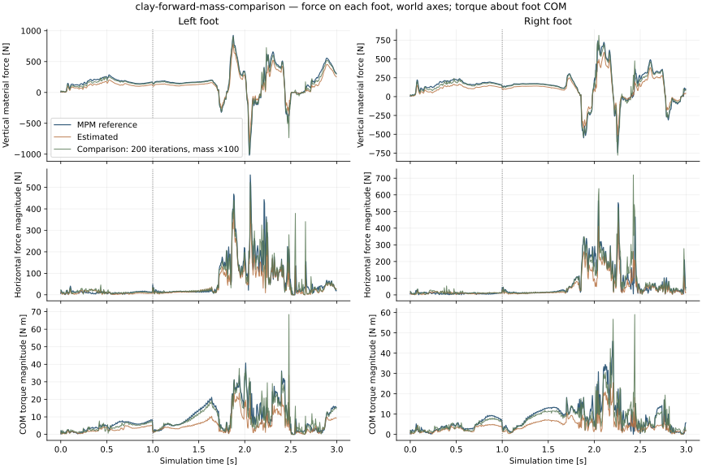
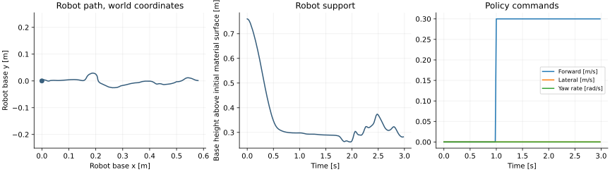
Paired comparison: 200 vs 200 solver iterations; effective particle mass 10× vs 100×, using identical particle and foot inputs.
Mean vertical material force summed over both feet: 301.3 N reference; 230.7 N estimated.
Mean actual base-frame motion after the command starts: forward 0.283 m/s, lateral -0.002 m/s, yaw rate 0.005 rad/s.
Direct ground-plane force on the feet, excluding material: mean total vertical 27.0 N; peak 410.1 N. Sampled after the last rigid substep, not averaged over both rigid substeps.
Case: clay-forward-mass-comparison. Metrics begin at 1.0 s.
Download parameters and measurements
MPM foot forces drive the robot. 3.92 s recorded. Reached material-bed boundary.
Base displacement in world coordinates: (0.846, 0.077, -0.453) m. Last recorded base height: 0.307 m above the initial material surface.
| Foot | Relative force error | Vertical bias [N] | Vertical peak: reference / estimate [N] | Force error while loaded [N] | Estimated force while unloaded [N] |
|---|---|---|---|---|---|
| Left | 30.2% | -42.6 | 895.9 / 759.5 | 97.8 | 29.8 |
| Right | 30.0% | -37.2 | 866.6 / 701.3 | 91.9 | 27.8 |
Relative error = norm of force error divided by norm of reference force over all evaluated samples. Loaded: reference vertical force > 20 N. Unloaded: reference force magnitude < 5 N. A dash means no samples met that condition. Peaks may occur at different times.
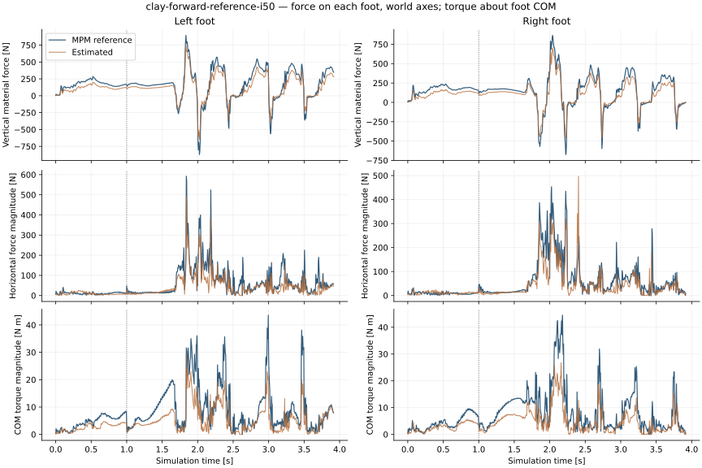
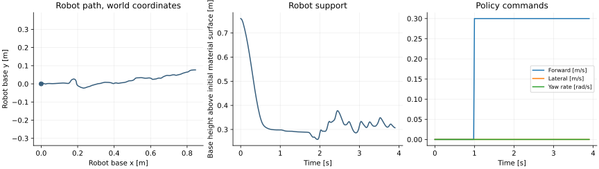
Mean vertical material force summed over both feet: 313.0 N reference; 233.2 N estimated.
Mean actual base-frame motion after the command starts: forward 0.283 m/s, lateral 0.023 m/s, yaw rate 0.014 rad/s.
Case: clay-forward-reference-i50. Metrics begin at 1.0 s.
Download parameters and measurements
MPM foot forces drive the robot. 6.00 s recorded. Requested duration completed.
Base displacement in world coordinates: (0.008, -0.123, -0.438) m. Last recorded base height: 0.322 m above the initial material surface.
| Foot | Relative force error | Vertical bias [N] | Vertical peak: reference / estimate [N] | Force error while loaded [N] | Estimated force while unloaded [N] |
|---|---|---|---|---|---|
| Left | 28.9% | -46.7 | 738.0 / 638.0 | 95.4 | 14.7 |
| Right | 28.3% | -37.9 | 668.3 / 504.2 | 92.8 | 8.4 |
Relative error = norm of force error divided by norm of reference force over all evaluated samples. Loaded: reference vertical force > 20 N. Unloaded: reference force magnitude < 5 N. A dash means no samples met that condition. Peaks may occur at different times.
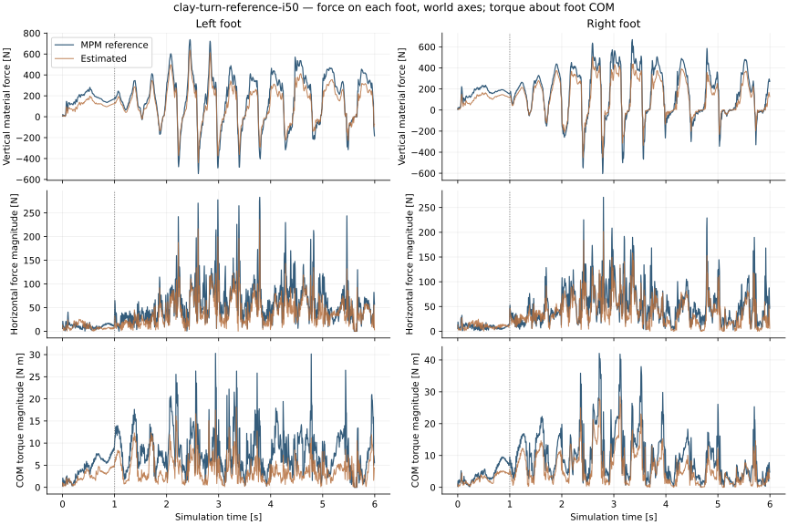
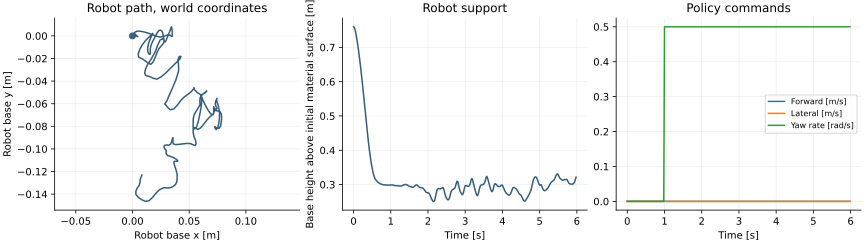
Mean vertical material force summed over both feet: 328.2 N reference; 243.6 N estimated.
Mean actual base-frame motion after the command starts: forward -0.012 m/s, lateral -0.007 m/s, yaw rate 0.477 rad/s.
Direct ground-plane force on the feet, excluding material: mean total vertical 0.0 N; peak 0.0 N. Sampled after the last rigid substep, not averaged over both rigid substeps.
Case: clay-turn-reference-i50. Metrics begin at 1.0 s.
Download parameters and measurements
Estimated foot forces drive the robot. 5.54 s recorded. Reached material-bed boundary.
Base displacement in world coordinates: (-0.848, 0.003, -0.511) m. Last recorded base height: 0.249 m above the initial material surface.
| Foot | Relative force error | Vertical bias [N] | Vertical peak: reference / estimate [N] | Force error while loaded [N] | Estimated force while unloaded [N] |
|---|---|---|---|---|---|
| Left | 23.4% | -32.9 | 880.0 / 727.0 | 92.4 | — |
| Right | 24.2% | -41.8 | 769.4 / 623.6 | 95.1 | — |
Relative error = norm of force error divided by norm of reference force over all evaluated samples. Loaded: reference vertical force > 20 N. Unloaded: reference force magnitude < 5 N. A dash means no samples met that condition. Peaks may occur at different times.
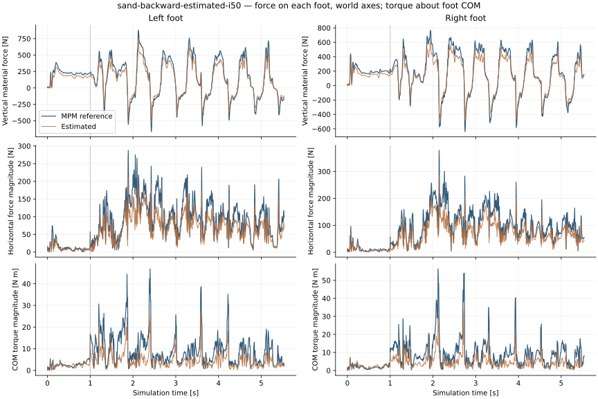
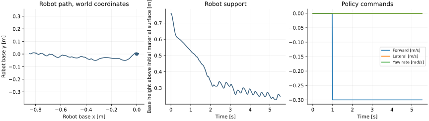
Mean vertical material force summed over both feet: 325.4 N reference; 250.7 N estimated.
Mean actual base-frame motion after the command starts: forward -0.191 m/s, lateral -0.005 m/s, yaw rate -0.002 rad/s.
Direct ground-plane force on the feet, excluding material: mean total vertical 76.0 N; peak 820.5 N. Sampled after the last rigid substep, not averaged over both rigid substeps.
Case: sand-backward-estimated-i50. Metrics begin at 1.0 s.
Download parameters and measurements
MPM foot forces drive the robot. 5.64 s recorded. Reached material-bed boundary.
Base displacement in world coordinates: (-0.847, 0.054, -0.313) m. Last recorded base height: 0.447 m above the initial material surface.
| Foot | Relative force error | Vertical bias [N] | Vertical peak: reference / estimate [N] | Force error while loaded [N] | Estimated force while unloaded [N] |
|---|---|---|---|---|---|
| Left | 30.6% | -48.6 | 412.6 / 319.0 | 82.4 | 11.0 |
| Right | 29.6% | -44.9 | 455.9 / 347.9 | 78.1 | 9.8 |
Relative error = norm of force error divided by norm of reference force over all evaluated samples. Loaded: reference vertical force > 20 N. Unloaded: reference force magnitude < 5 N. A dash means no samples met that condition. Peaks may occur at different times.
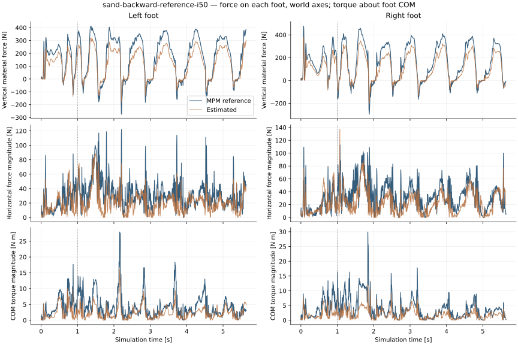
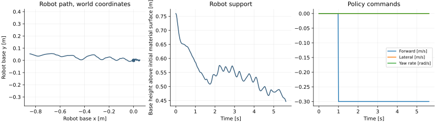
Mean vertical material force summed over both feet: 326.9 N reference; 233.4 N estimated.
Mean actual base-frame motion after the command starts: forward -0.195 m/s, lateral 0.005 m/s, yaw rate -0.008 rad/s.
Case: sand-backward-reference-i50. Metrics begin at 1.0 s.
Download parameters and measurements
Estimated foot forces drive the robot. 3.80 s recorded. Reached material-bed boundary.
Base displacement in world coordinates: (0.850, -0.173, -0.410) m. Last recorded base height: 0.350 m above the initial material surface.
| Foot | Relative force error | Vertical bias [N] | Vertical peak: reference / estimate [N] | Force error while loaded [N] | Estimated force while unloaded [N] |
|---|---|---|---|---|---|
| Left | 23.9% | -38.4 | 851.2 / 619.7 | 96.8 | — |
| Right | 26.3% | -42.6 | 780.7 / 628.5 | 107.3 | — |
Relative error = norm of force error divided by norm of reference force over all evaluated samples. Loaded: reference vertical force > 20 N. Unloaded: reference force magnitude < 5 N. A dash means no samples met that condition. Peaks may occur at different times.
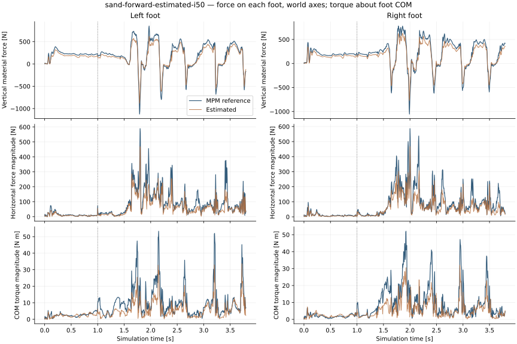
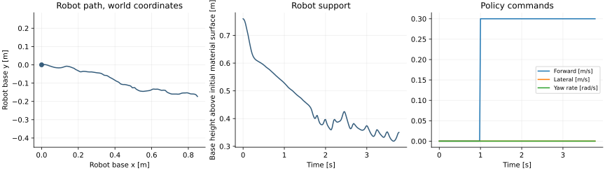
Mean vertical material force summed over both feet: 407.9 N reference; 326.9 N estimated.
Mean actual base-frame motion after the command starts: forward 0.308 m/s, lateral -0.049 m/s, yaw rate -0.010 rad/s.
Direct ground-plane force on the feet, excluding material: mean total vertical 0.3 N; peak 95.9 N. Sampled after the last rigid substep, not averaged over both rigid substeps.
Case: sand-forward-estimated-i50. Metrics begin at 1.0 s.
Download parameters and measurements
MPM foot forces drive the robot. 3.00 s recorded. Requested duration completed.
Base displacement in world coordinates: (0.665, 0.048, -0.340) m. Last recorded base height: 0.420 m above the initial material surface.
| Foot | Relative force error | Vertical bias [N] | Vertical peak: reference / estimate [N] | Force error while loaded [N] | Estimated force while unloaded [N] |
|---|---|---|---|---|---|
| Left | 35.6% | -45.9 | 516.1 / 383.2 | 86.7 | 3.9 |
| Right | 31.8% | -50.0 | 396.6 / 296.1 | 81.7 | 4.8 |
Relative error = norm of force error divided by norm of reference force over all evaluated samples. Loaded: reference vertical force > 20 N. Unloaded: reference force magnitude < 5 N. A dash means no samples met that condition. Peaks may occur at different times.
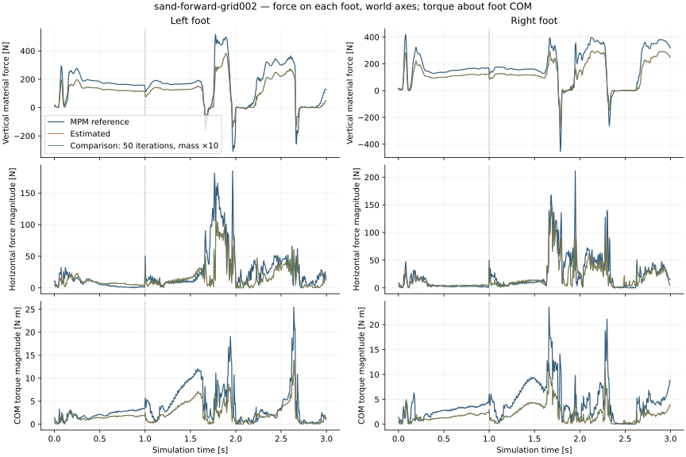
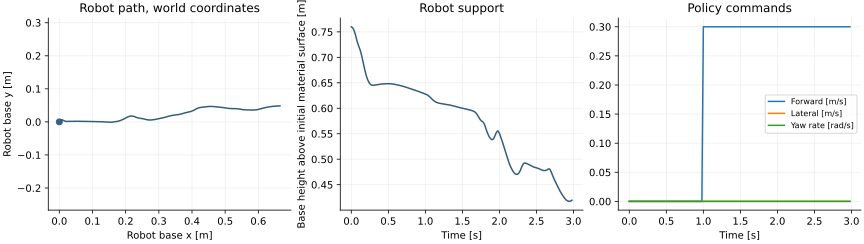
Paired comparison: 200 vs 50 solver iterations; effective particle mass 10× vs 10×, using identical particle and foot inputs.
Mean vertical material force summed over both feet: 330.4 N reference; 234.5 N estimated.
Mean actual base-frame motion after the command starts: forward 0.332 m/s, lateral 0.004 m/s, yaw rate 0.047 rad/s.
Direct ground-plane force on the feet, excluding material: mean total vertical 0.0 N; peak 0.0 N. Sampled after the last rigid substep, not averaged over both rigid substeps.
Case: sand-forward-grid002. Metrics begin at 1.0 s.
Download parameters and measurements
MPM foot forces drive the robot. 3.00 s recorded. Requested duration completed.
Base displacement in world coordinates: (0.632, 0.013, -0.307) m. Last recorded base height: 0.453 m above the initial material surface.
| Foot | Relative force error | Vertical bias [N] | Vertical peak: reference / estimate [N] | Force error while loaded [N] | Estimated force while unloaded [N] |
|---|---|---|---|---|---|
| Left | 32.3% | -45.0 | 530.4 / 396.8 | 84.2 | 16.2 |
| Right | 30.7% | -46.2 | 805.4 / 650.1 | 85.3 | 12.6 |
Relative error = norm of force error divided by norm of reference force over all evaluated samples. Loaded: reference vertical force > 20 N. Unloaded: reference force magnitude < 5 N. A dash means no samples met that condition. Peaks may occur at different times.
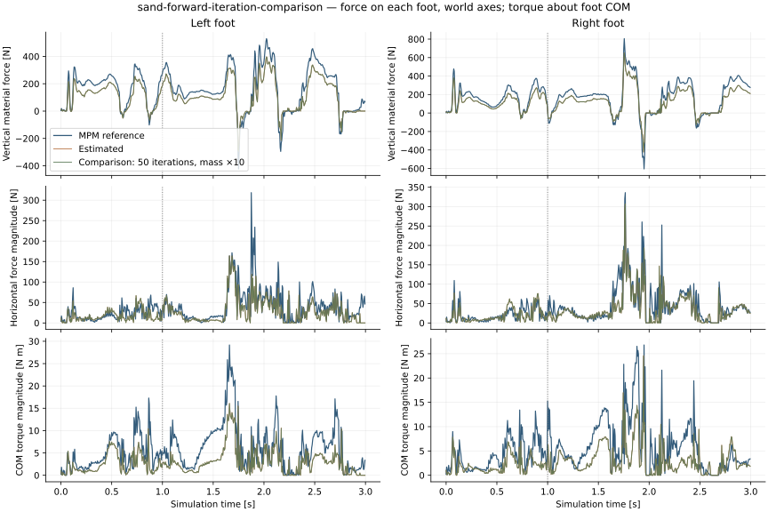
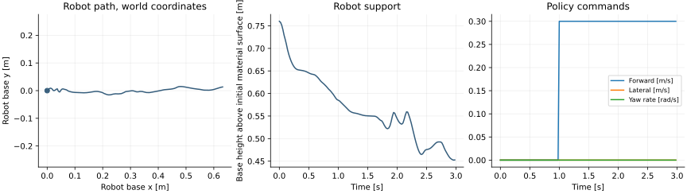
Paired comparison: 200 vs 50 solver iterations; effective particle mass 10× vs 10×, using identical particle and foot inputs.
Mean vertical material force summed over both feet: 327.9 N reference; 236.7 N estimated.
Mean actual base-frame motion after the command starts: forward 0.297 m/s, lateral 0.007 m/s, yaw rate 0.011 rad/s.
Direct ground-plane force on the feet, excluding material: mean total vertical 0.0 N; peak 0.0 N. Sampled after the last rigid substep, not averaged over both rigid substeps.
Case: sand-forward-iteration-comparison. Metrics begin at 1.0 s.
Download parameters and measurements
MPM foot forces drive the robot. 3.00 s recorded. Requested duration completed.
Base displacement in world coordinates: (0.627, 0.056, -0.290) m. Last recorded base height: 0.470 m above the initial material surface.
| Foot | Relative force error | Vertical bias [N] | Vertical peak: reference / estimate [N] | Force error while loaded [N] | Estimated force while unloaded [N] |
|---|---|---|---|---|---|
| Left | 31.5% | -44.9 | 496.4 / 377.7 | 83.7 | 9.8 |
| Right | 29.9% | -42.7 | 637.8 / 491.3 | 80.7 | 11.9 |
Relative error = norm of force error divided by norm of reference force over all evaluated samples. Loaded: reference vertical force > 20 N. Unloaded: reference force magnitude < 5 N. A dash means no samples met that condition. Peaks may occur at different times.
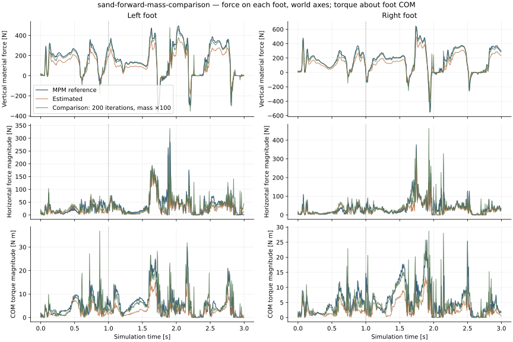
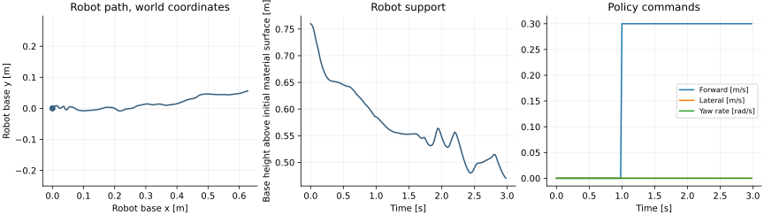
Paired comparison: 200 vs 200 solver iterations; effective particle mass 10× vs 100×, using identical particle and foot inputs.
Mean vertical material force summed over both feet: 324.7 N reference; 237.1 N estimated.
Mean actual base-frame motion after the command starts: forward 0.295 m/s, lateral 0.026 m/s, yaw rate 0.025 rad/s.
Direct ground-plane force on the feet, excluding material: mean total vertical 0.0 N; peak 0.0 N. Sampled after the last rigid substep, not averaged over both rigid substeps.
Case: sand-forward-mass-comparison. Metrics begin at 1.0 s.
Download parameters and measurements
MPM foot forces drive the robot. 3.54 s recorded. Reached material-bed boundary.
Base displacement in world coordinates: (0.847, 0.020, -0.335) m. Last recorded base height: 0.425 m above the initial material surface.
| Foot | Relative force error | Vertical bias [N] | Vertical peak: reference / estimate [N] | Force error while loaded [N] | Estimated force while unloaded [N] |
|---|---|---|---|---|---|
| Left | 32.6% | -47.3 | 513.1 / 396.6 | 85.0 | 18.5 |
| Right | 30.2% | -42.6 | 736.6 / 603.1 | 84.3 | 9.1 |
Relative error = norm of force error divided by norm of reference force over all evaluated samples. Loaded: reference vertical force > 20 N. Unloaded: reference force magnitude < 5 N. A dash means no samples met that condition. Peaks may occur at different times.
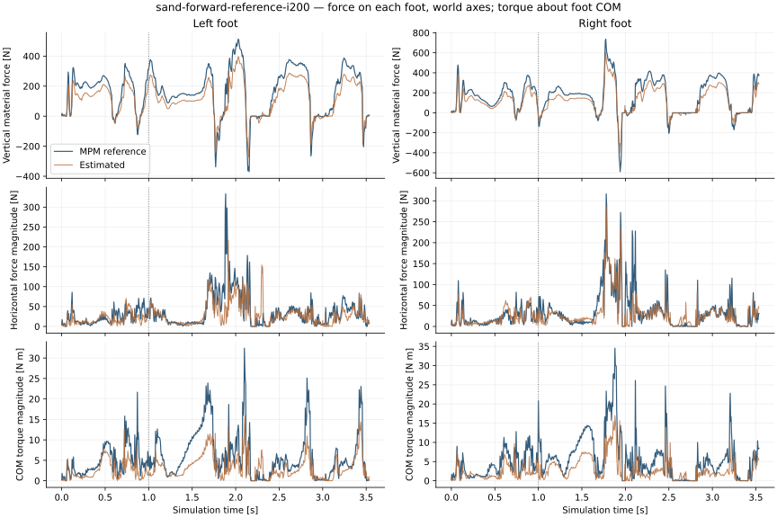
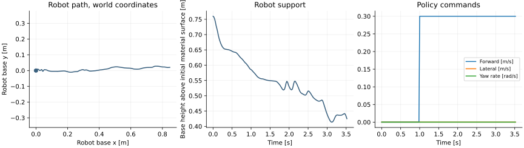
Mean vertical material force summed over both feet: 324.3 N reference; 234.5 N estimated.
Mean actual base-frame motion after the command starts: forward 0.319 m/s, lateral 0.004 m/s, yaw rate 0.022 rad/s.
Direct ground-plane force on the feet, excluding material: mean total vertical 0.0 N; peak 0.0 N. Sampled after the last rigid substep, not averaged over both rigid substeps.
Case: sand-forward-reference-i200. Metrics begin at 1.0 s.
Download parameters and measurements
MPM foot forces drive the robot. 3.64 s recorded. Reached material-bed boundary.
Base displacement in world coordinates: (0.846, 0.035, -0.357) m. Last recorded base height: 0.403 m above the initial material surface.
| Foot | Relative force error | Vertical bias [N] | Vertical peak: reference / estimate [N] | Force error while loaded [N] | Estimated force while unloaded [N] |
|---|---|---|---|---|---|
| Left | 31.2% | -44.5 | 509.0 / 399.9 | 83.9 | 7.5 |
| Right | 29.4% | -44.1 | 629.2 / 505.2 | 81.1 | 13.7 |
Relative error = norm of force error divided by norm of reference force over all evaluated samples. Loaded: reference vertical force > 20 N. Unloaded: reference force magnitude < 5 N. A dash means no samples met that condition. Peaks may occur at different times.
Newton RTX replay of recorded robot and MPM particle motion at real time. Particle display radius: 10 mm; physical volume radius: 15.79 mm. Download video.
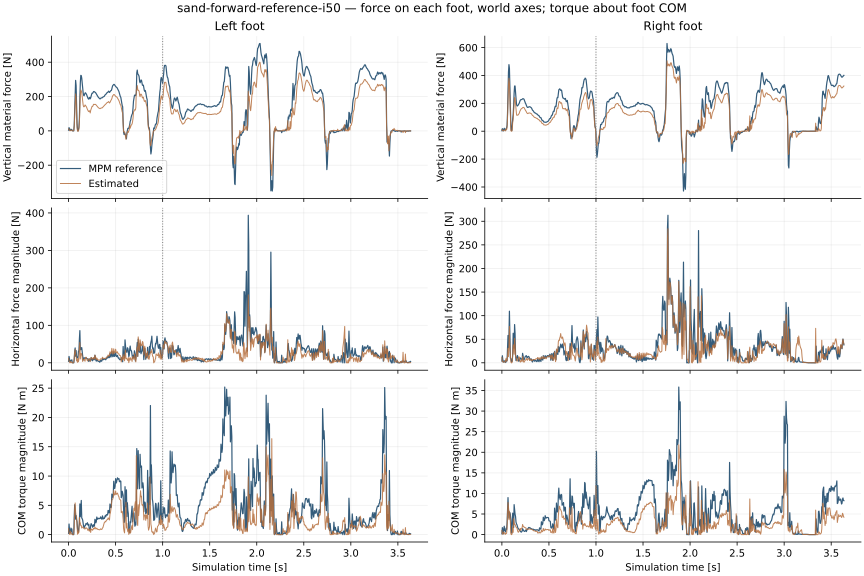
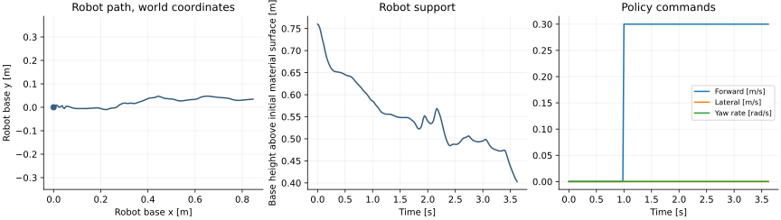
Mean vertical material force summed over both feet: 326.1 N reference; 237.4 N estimated.
Mean actual base-frame motion after the command starts: forward 0.307 m/s, lateral 0.009 m/s, yaw rate 0.025 rad/s.
Case: sand-forward-reference-i50. Metrics begin at 1.0 s.
Download parameters and measurements
Estimated foot forces drive the robot. 4.50 s recorded. Terminated: bad orientation.
Base displacement in world coordinates: (-0.509, -0.015, -0.730) m. Last recorded base height: 0.030 m above the initial material surface.
| Foot | Relative force error | Vertical bias [N] | Vertical peak: reference / estimate [N] | Force error while loaded [N] | Estimated force while unloaded [N] |
|---|---|---|---|---|---|
| Left | 25.2% | -32.6 | 916.7 / 730.6 | 93.2 | — |
| Right | 25.3% | -28.2 | 684.7 / 523.8 | 78.4 | — |
Relative error = norm of force error divided by norm of reference force over all evaluated samples. Loaded: reference vertical force > 20 N. Unloaded: reference force magnitude < 5 N. A dash means no samples met that condition. Peaks may occur at different times.
Newton RTX replay of recorded robot and MPM particle motion at real time. Particle display radius: 10 mm; physical volume radius: 15.79 mm. Download video.
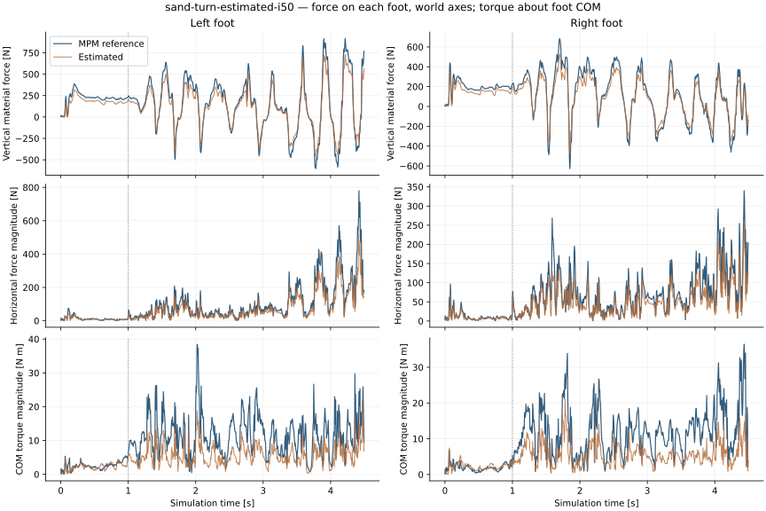
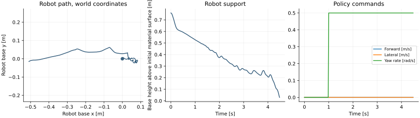
Mean vertical material force summed over both feet: 264.2 N reference; 203.4 N estimated.
Mean actual base-frame motion after the command starts: forward -0.020 m/s, lateral 0.156 m/s, yaw rate 0.347 rad/s.
Direct ground-plane force on the feet, excluding material: mean total vertical 115.6 N; peak 1021.9 N. Sampled after the last rigid substep, not averaged over both rigid substeps.
Case: sand-turn-estimated-i50. Metrics begin at 1.0 s.
Download parameters and measurements
Estimated foot forces drive the robot. 6.00 s recorded. Requested duration completed.
Base displacement in world coordinates: (0.052, -0.023, -0.245) m. Last recorded base height: 0.515 m above the initial material surface.
| Foot | Relative force error | Vertical bias [N] | Vertical peak: reference / estimate [N] | Force error while loaded [N] | Estimated force while unloaded [N] |
|---|---|---|---|---|---|
| Left | 11.2% | -6.0 | 704.3 / 689.2 | 22.5 | — |
| Right | 13.0% | -3.7 | 445.4 / 430.3 | 26.0 | 33.7 |
Relative error = norm of force error divided by norm of reference force over all evaluated samples. Loaded: reference vertical force > 20 N. Unloaded: reference force magnitude < 5 N. A dash means no samples met that condition. Peaks may occur at different times.
Newton RTX replay of recorded robot and MPM particle motion at real time. Particle display radius: 10 mm; physical volume radius: 15.79 mm. Download video.
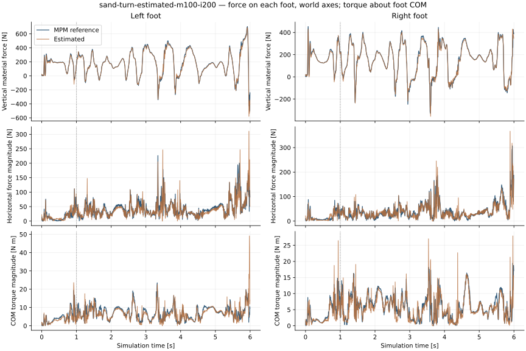
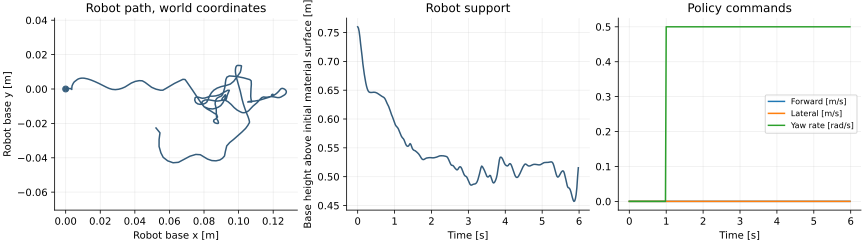
Mean vertical material force summed over both feet: 339.6 N reference; 330.0 N estimated.
Mean actual base-frame motion after the command starts: forward 0.008 m/s, lateral 0.004 m/s, yaw rate 0.490 rad/s.
Direct ground-plane force on the feet, excluding material: mean total vertical 0.0 N; peak 0.0 N. Sampled after the last rigid substep, not averaged over both rigid substeps.
Case: sand-turn-estimated-m100-i200. Metrics begin at 1.0 s.
Download parameters and measurements
MPM foot forces drive the robot. 6.00 s recorded. Requested duration completed.
Base displacement in world coordinates: (-0.038, -0.024, -0.204) m. Last recorded base height: 0.556 m above the initial material surface.
| Foot | Relative force error | Vertical bias [N] | Vertical peak: reference / estimate [N] | Force error while loaded [N] | Estimated force while unloaded [N] |
|---|---|---|---|---|---|
| Left | 30.5% | -55.7 | 526.4 / 394.9 | 90.1 | — |
| Right | 30.9% | -36.4 | 432.6 / 325.4 | 79.1 | 1.4 |
Relative error = norm of force error divided by norm of reference force over all evaluated samples. Loaded: reference vertical force > 20 N. Unloaded: reference force magnitude < 5 N. A dash means no samples met that condition. Peaks may occur at different times.
Newton RTX replay of recorded robot and MPM particle motion at real time. Particle display radius: 10 mm; physical volume radius: 15.79 mm. Download video.
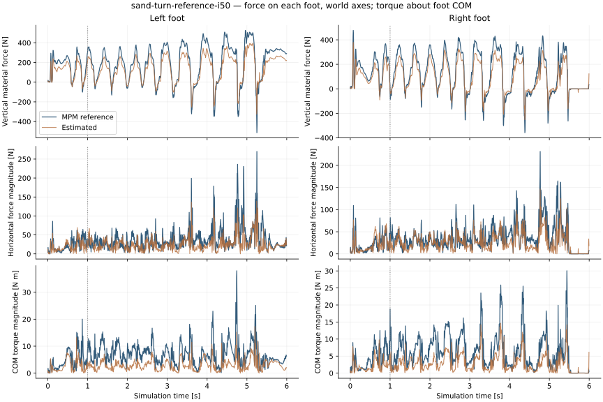
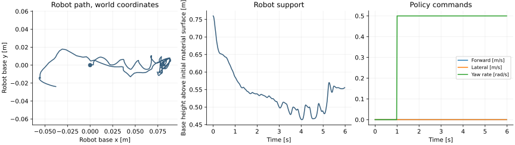
Mean vertical material force summed over both feet: 327.1 N reference; 235.0 N estimated.
Mean actual base-frame motion after the command starts: forward 0.008 m/s, lateral 0.018 m/s, yaw rate 0.483 rad/s.
Case: sand-turn-reference-i50. Metrics begin at 1.0 s.
Download parameters and measurements
MPM foot forces drive the robot. 6.00 s recorded. Requested duration completed.
Base displacement in world coordinates: (-0.838, 0.012, -0.478) m. Last recorded base height: 0.282 m above the initial material surface.
| Foot | Relative force error | Vertical bias [N] | Vertical peak: reference / estimate [N] | Force error while loaded [N] | Estimated force while unloaded [N] |
|---|---|---|---|---|---|
| Left | 56.0% | -68.8 | 447.7 / 231.1 | 131.7 | 1.7 |
| Right | 57.2% | -72.0 | 491.2 / 243.5 | 137.7 | — |
Relative error = norm of force error divided by norm of reference force over all evaluated samples. Loaded: reference vertical force > 20 N. Unloaded: reference force magnitude < 5 N. A dash means no samples met that condition. Peaks may occur at different times.
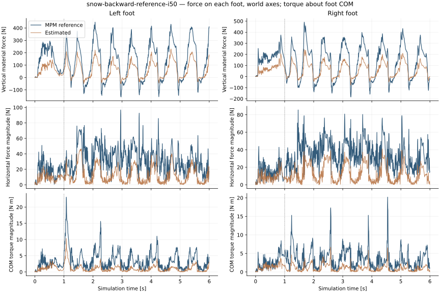
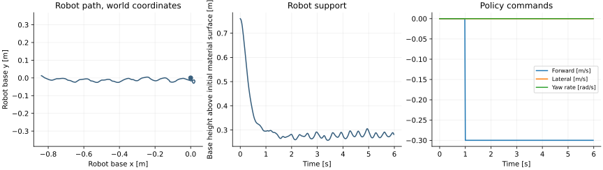
Mean vertical material force summed over both feet: 261.0 N reference; 120.1 N estimated.
Mean actual base-frame motion after the command starts: forward -0.174 m/s, lateral 0.003 m/s, yaw rate 0.001 rad/s.
Case: snow-backward-reference-i50. Metrics begin at 1.0 s.
Download parameters and measurements
MPM foot forces drive the robot. 3.00 s recorded. Requested duration completed.
Base displacement in world coordinates: (0.467, 0.031, -0.477) m. Last recorded base height: 0.283 m above the initial material surface.
| Foot | Relative force error | Vertical bias [N] | Vertical peak: reference / estimate [N] | Force error while loaded [N] | Estimated force while unloaded [N] |
|---|---|---|---|---|---|
| Left | 56.5% | -69.0 | 466.1 / 223.2 | 127.9 | — |
| Right | 55.8% | -55.1 | 433.7 / 214.1 | 116.4 | — |
Relative error = norm of force error divided by norm of reference force over all evaluated samples. Loaded: reference vertical force > 20 N. Unloaded: reference force magnitude < 5 N. A dash means no samples met that condition. Peaks may occur at different times.
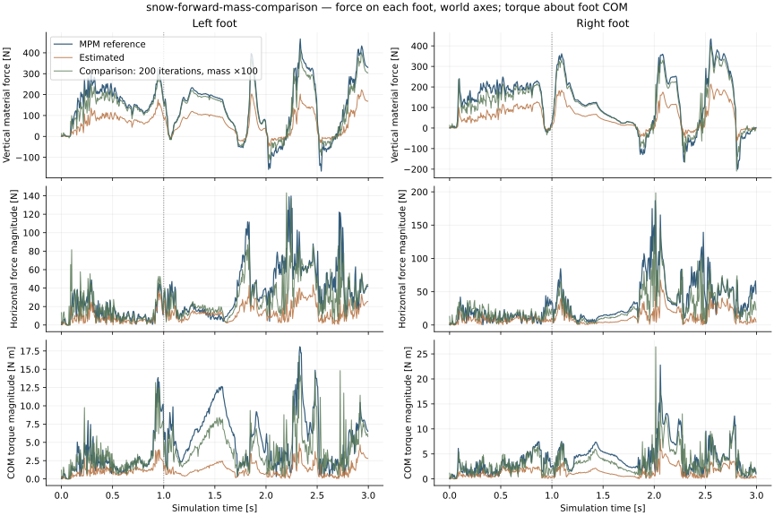
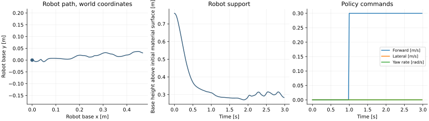
Paired comparison: 200 vs 200 solver iterations; effective particle mass 10× vs 100×, using identical particle and foot inputs.
Mean vertical material force summed over both feet: 244.5 N reference; 120.5 N estimated.
Mean actual base-frame motion after the command starts: forward 0.213 m/s, lateral 0.010 m/s, yaw rate 0.016 rad/s.
Direct ground-plane force on the feet, excluding material: mean total vertical 81.9 N; peak 339.8 N. Sampled after the last rigid substep, not averaged over both rigid substeps.
Case: snow-forward-mass-comparison. Metrics begin at 1.0 s.
Download parameters and measurements
MPM foot forces drive the robot. 4.48 s recorded. Reached material-bed boundary.
Base displacement in world coordinates: (0.845, 0.029, -0.483) m. Last recorded base height: 0.277 m above the initial material surface.
| Foot | Relative force error | Vertical bias [N] | Vertical peak: reference / estimate [N] | Force error while loaded [N] | Estimated force while unloaded [N] |
|---|---|---|---|---|---|
| Left | 54.4% | -66.2 | 503.1 / 251.1 | 123.8 | — |
| Right | 59.5% | -57.2 | 393.9 / 193.3 | 116.7 | — |
Relative error = norm of force error divided by norm of reference force over all evaluated samples. Loaded: reference vertical force > 20 N. Unloaded: reference force magnitude < 5 N. A dash means no samples met that condition. Peaks may occur at different times.
Newton RTX replay of recorded robot and MPM particle motion at real time. Particle display radius: 10 mm; physical volume radius: 15.79 mm. Download video.
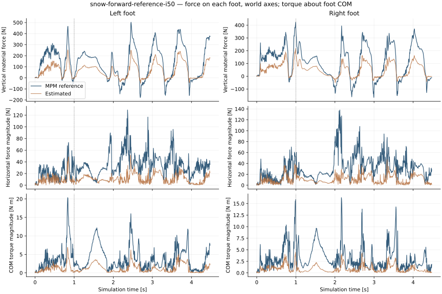
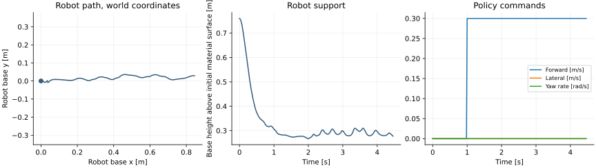
Mean vertical material force summed over both feet: 234.4 N reference; 111.0 N estimated.
Mean actual base-frame motion after the command starts: forward 0.231 m/s, lateral 0.006 m/s, yaw rate 0.010 rad/s.
Case: snow-forward-reference-i50. Metrics begin at 1.0 s.
Download parameters and measurements
MPM foot forces drive the robot. 6.00 s recorded. Requested duration completed.
Base displacement in world coordinates: (0.019, -0.040, -0.497) m. Last recorded base height: 0.263 m above the initial material surface.
| Foot | Relative force error | Vertical bias [N] | Vertical peak: reference / estimate [N] | Force error while loaded [N] | Estimated force while unloaded [N] |
|---|---|---|---|---|---|
| Left | 51.7% | -80.7 | 466.0 / 250.0 | 129.7 | — |
| Right | 53.6% | -56.5 | 497.6 / 284.3 | 110.6 | — |
Relative error = norm of force error divided by norm of reference force over all evaluated samples. Loaded: reference vertical force > 20 N. Unloaded: reference force magnitude < 5 N. A dash means no samples met that condition. Peaks may occur at different times.
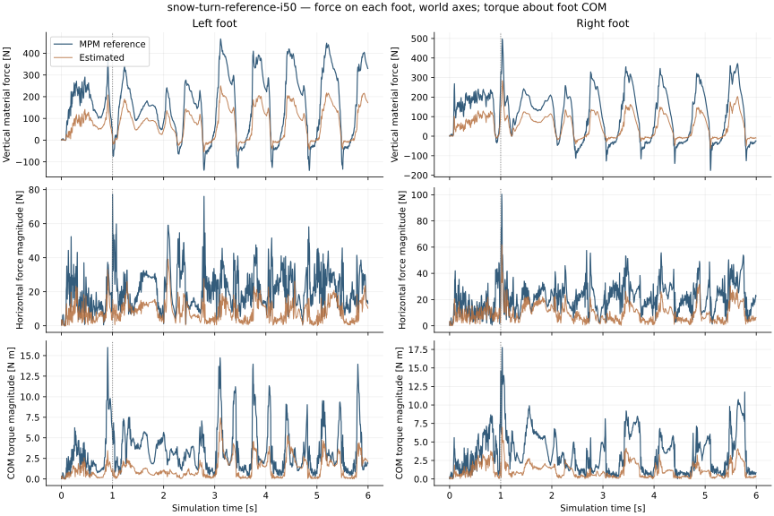
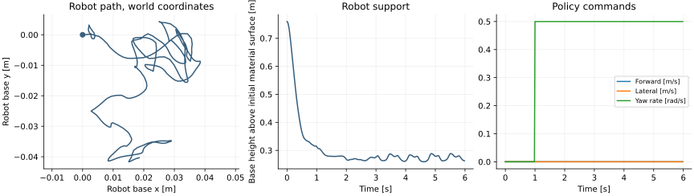
Mean vertical material force summed over both feet: 271.6 N reference; 134.3 N estimated.
Mean actual base-frame motion after the command starts: forward -0.008 m/s, lateral 0.002 m/s, yaw rate 0.497 rad/s.
Case: snow-turn-reference-i50. Metrics begin at 1.0 s.
Download parameters and measurements